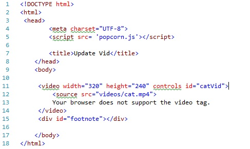

Before creating the actual instance, two things need to be added to the code you wrote to add the video element:
<video> element so you can tell
Popcorn which element to control.<div> element after the
<video> element with the id footnote. This will later be used
to add the text that is synched with the videoYou code should now look something like this: 
The Popcorn constructor takes the form:
Popcorn(callback | id, optionsObject)
Options
Example: To create an instance of Popcorn to control our previously created video element we need to use the id we added to the video element as an argument when calling the Popcorn constructor
The code for this is simple and looks like this:
**Note: We are assigning the Popcorn instance to a variable for work we are going to do with it later
Put this declaration in a Java Script file linked to your html file and you have created an instance of Popcorn. You ready to move on to learning how to use the popcorn instance to create interactive media